Overview
Samples List
Within CRYENGINE you have many different options and setups at your disposal, but to learn all of these systems you typically have two different ways. You can read the documentation here, or you can look at samples and reverse engineer different setups with the ideal scenario of just replacing the geometry. This is why we supply samples on the Asset Database; for the developers to be able to see how we have constructed sample scenes for reference, alongside having actual production-used assets to see how you too can get that Hunt: Showdown quality. To get you started, we have created a listing of all of the samples we currently provide on the Asset DB that range from tiny games to full projects that encompass vehicles, AI, and weapon functionality. Take a look below and explore the samples!
Before jumping into the samples, it should be noted that the GameSDK should be the first reference point for using the engine, given it is the most complete sample codebase from which to see the entire production scope.
GalaxSys
The GalaxSys sample project is a top-down, twin-stick style space shooter designed to show a basic implementation of a game in CRYENGINE using the latest engine version, engine features and various subsystems in easily digestible examples.
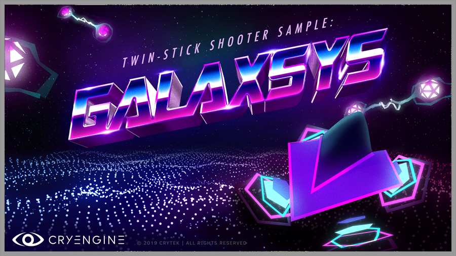
GameSDK
The GameSDK Sample Project is a collection of assets that developers can use to learn how to create their own first-person games (shooters, role-playing games etc). A large amount of systems that are exposed through this custom gamecode will allow you to see how to construct various common items like vehicles, weapons, and AI functionality.
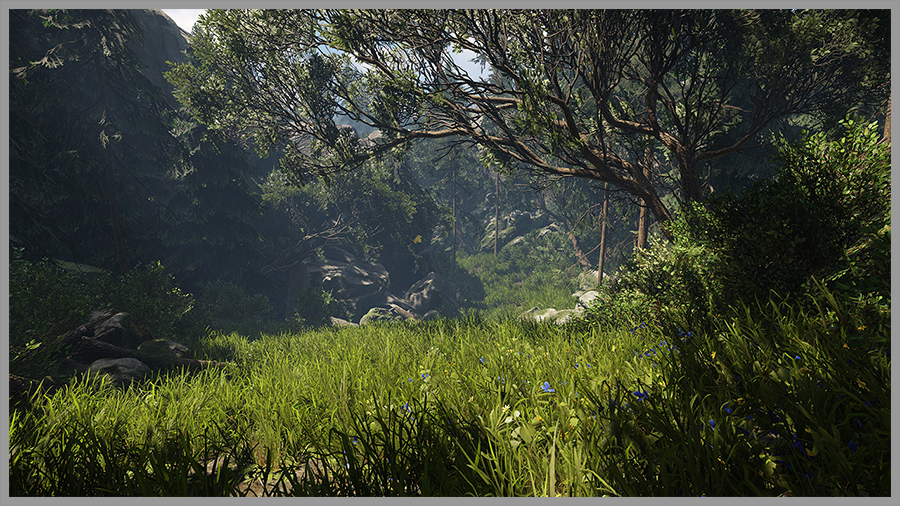
Flappyboid
The game Flappyboid is a starter walkthrough on how you can make a simple game that mimics a bird flying through pipes and collecting stars for a reward. In this sample you touch upon topics like Flow Graph for game functionality, Physics for the collision of the bird on the pipes, and the Game Over text floating on top of the water.
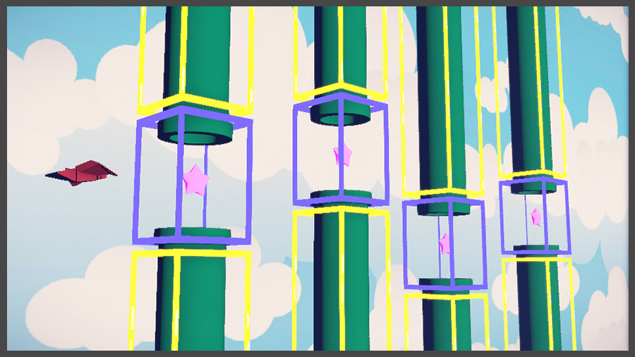
LightenUp
The example named "Lighten Up" provides new users with a framework to setup their own scenes using the tool Schematyc. Schematyc is a graphing implementation similar to Flow Graph that allows for advanced collections of components to be assembled. Various mechanics are covered that include input, movement, physics, sound, particles, and volumes. We hope to see all users build upon the sample and showcase the flexibility that Schematyc brings to the CRYENGINE V toolset.
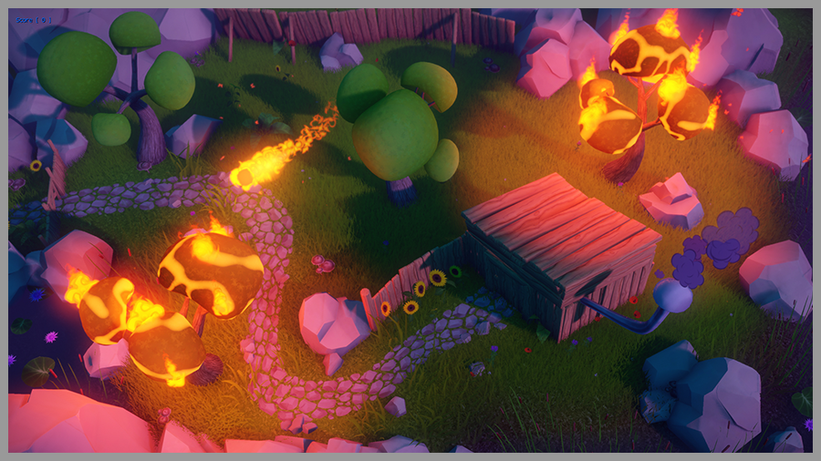
Sydewinder
This C# sample application contains tutorials that resemble game, and also shows interaction with CRYENGINE. The demo game resembles an endless sidescroller with a high score counter. For example, a spaceship flies from left to right through a space station while being attacked by enemy ships. The game is created in a simple manner to focus on the actual mission of showing interaction with sub-systems of the CRYENGINE.
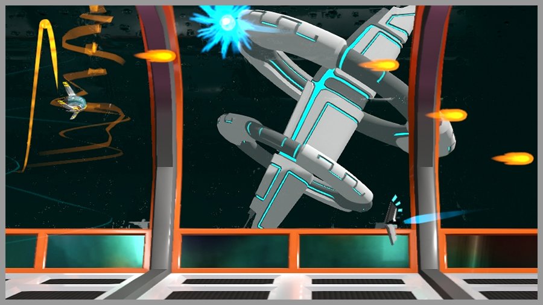
Bar Interior
This project is available as a example interior scene to show composition and lighting in a confined space. It contains various versions of furniture and props. A warm little environment for developers to test out and possibly get darts up and running inside the room. Show us in the CRYENGINE team what you are made of!
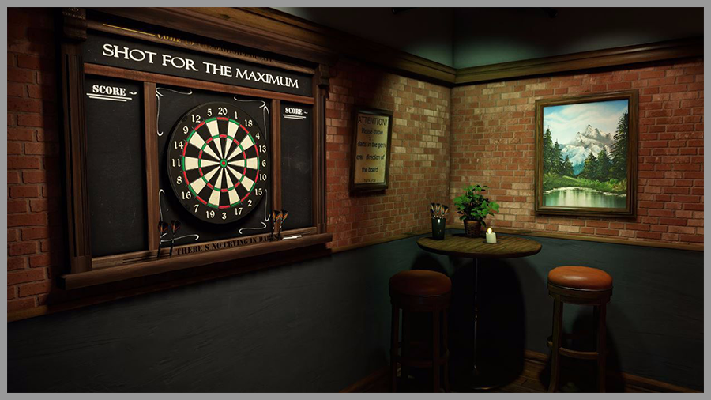
Chinese Garden
The Chinese Garden scene displays the usage of the Designer Tool to white-box your scenes, the Designer Tool Office scene is provided to users to understand the flexibility of the in-editor modeler we provide stock to all users. In particular the Chinese Garden is one of the largest scenes we have produced using the Designer Tool inhouse to be given away.
The Garden highlights how you can do a variety of models from organic with trees to the sacks of grain and buildings all made inside the engine itself. The Chinese Garden was an important testcase for us internally as it stress-tested the implementation to give you the feature set today.
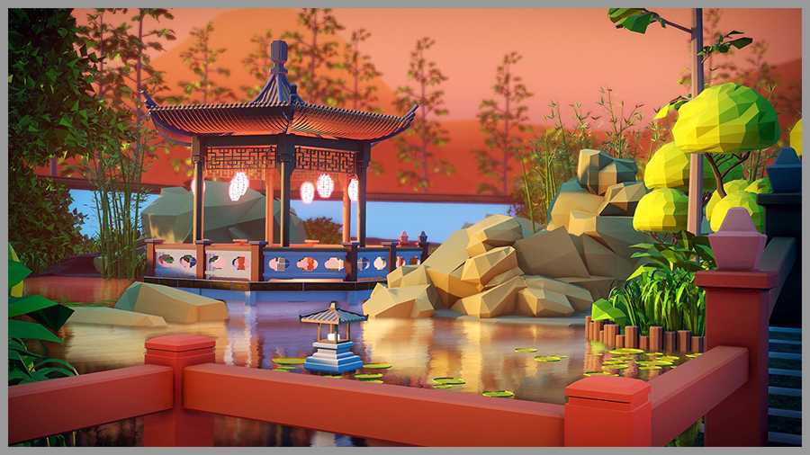
Calibration Level
This project is available as a reference for setting up materials and having a default scene to standardize assets for your development. Prior to release the calibration scene was used internally at our studios by artists to tweak and define the consistent look of items across our titles. Now you can too.
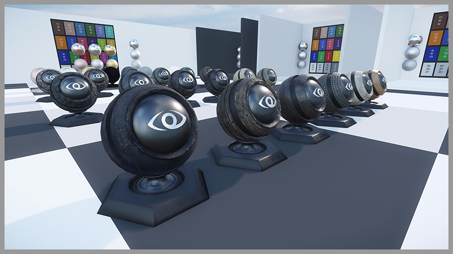
Official Crytek Asset Packs
We provide a numerous collection of assets that you can use in your own projects, ready for CRYENGINE, which come from our very own games or internal projects. From beautiful grass, trees and shrubs, to flowing rivers, and even character animations, all high quality and completely free.
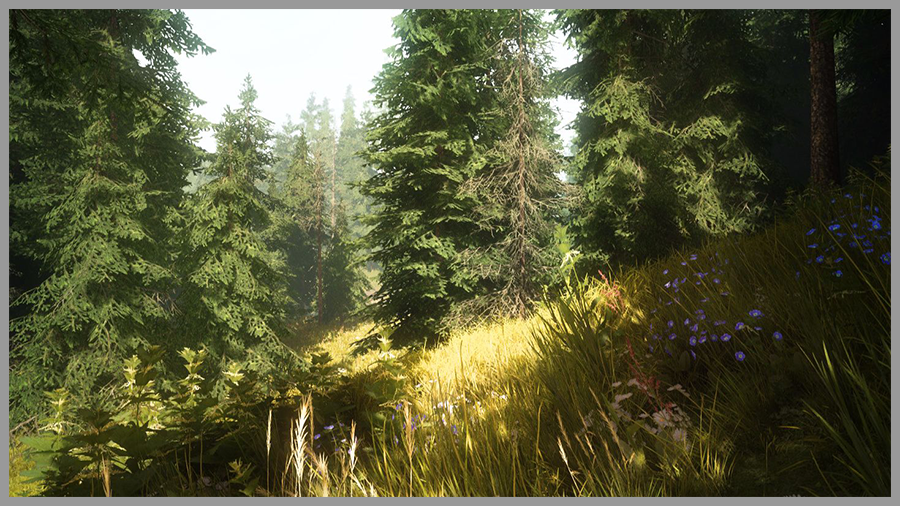
Ryse Characters
Previously only available through the Humble Bundle Pack for use in CRYENGINE, the CRYENGINE Ryse - Legionnaire Sample is a character sample that developers can use to examine and mod into their games for use in CRYENGINE. Another character is also available as one of the Ryse Elephants that you can have with full animations for movement.
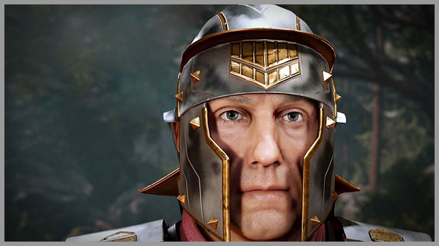
Sponza
Available prior on the Crytek page for use in CRYENGINE and other app testing, the CRYENGINE Sponza Sample Scene is a sample that developers can use to test lighting for their own games and setups. It works as a well contained environment that most use for light and shader tests to calibrate their scenes or show off new tech.
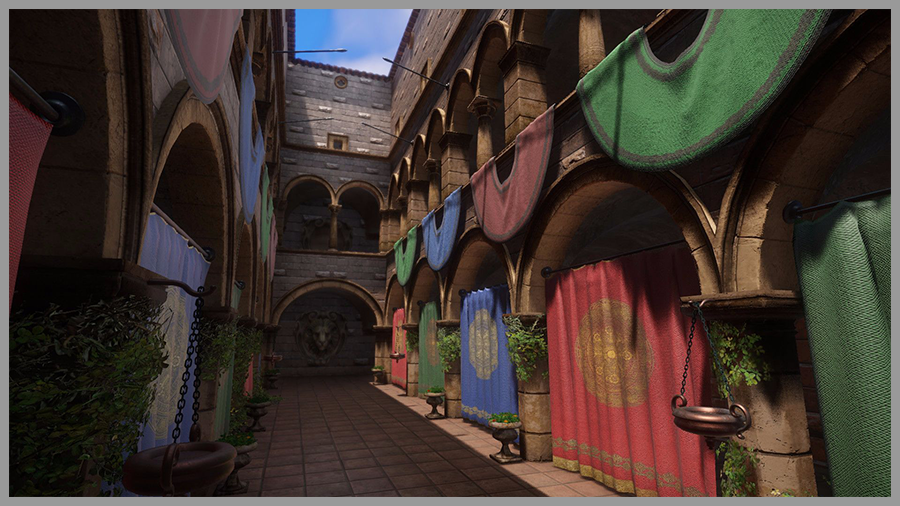